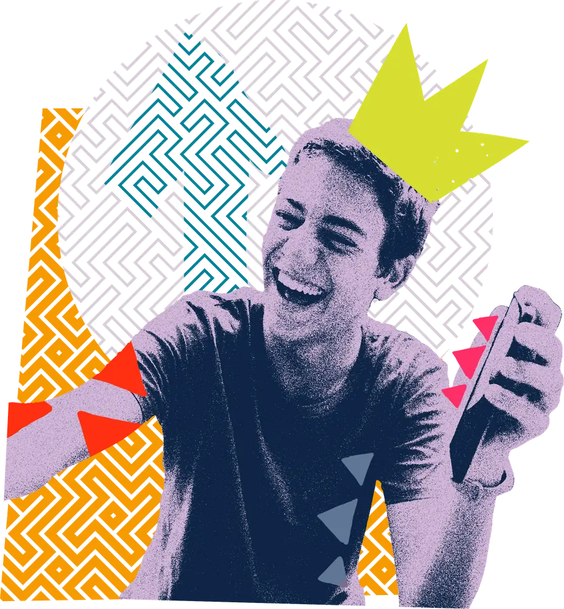
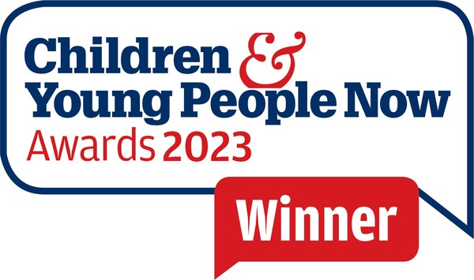
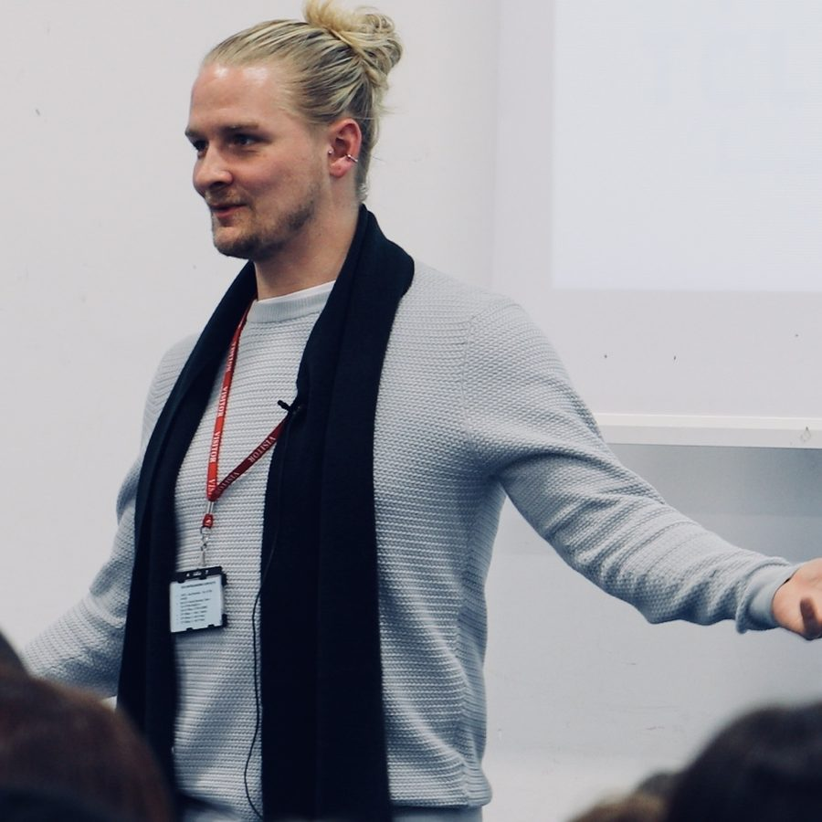
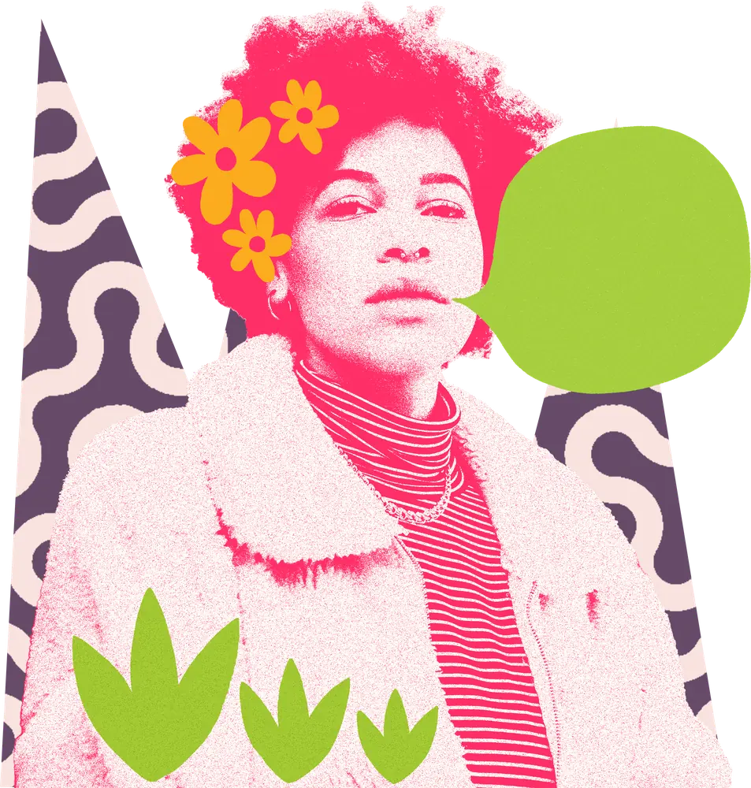

Children’s social care, changed by people who grew up in it.
Consultancy and training for councils, virtual schools and fostering services, co-designed with children in care, care leavers and the people who work with them.



Most children’s services are designed by people who never lived in them. The Care Leaders was started by someone who did.
Luke Rodgers went into care at 10. At 15 he was in a B&B, and by 18 he was living in a caravan on £52 a week. He has since spent more than a decade in national leadership roles. He is the engagement lead for the DfE on the rewrite of England’s fostering standards, sat on the board that founded the charity The House Project, was a Knowledge Equity Fellow at Saïd Business School, University of Oxford, and was awarded the British Empire Medal in 2018.
From care leaver to care leader. That’s the idea Luke founded The Care Leaders on in 2017: a children’s social care consultancy that puts lived experience in the rooms where decisions get made, and backs it with evidence.
Not lived experience as a guest speaker slot. Lived experience as strategy.
About us and our teamWhat we do

Consultancy
Consultancy for children’s services in five areas: transformation and service design, fostering, participation and co-production, employment and pathways, and practice approaches.
More about consultancyProgrammes
Programmes that run over months: leadership for designated teachers and care-experienced young people, and employment for care leavers.
More about our programmesTraining
Trauma-informed training for schools, social workers and foster carers, from The Journey Through Care to NVR.
More about trainingKeynotes
Luke Rodgers, care-experienced keynote speaker, at your conference, leadership event or staff day.
See all keynotesThe Care Leaders Online
Online CPD for children’s social care that your whole workforce can take when it suits them.
More about The Care Leaders OnlineThe Fellowship
A year-long leadership programme for care-experienced people with an idea that could change the system. Applications open in November.
More about the FellowshipWhat we’ve done
See all our workDepartment for Education: Fostering National Minimum Standards
We led the national engagement on the rewrite of England’s fostering standards, with councils, independent fostering agencies and partner organisations across England.
Read the case studyDurham County Council: NVR in residential care
120 residential staff across 11 children’s homes trained in non-violent resistance.
Read the case studyRegional Care Cooperative, South East: Youth Participation Collective
Young people from across the South East designed a Shadow Board of 18 Youth Ambassadors to give children in care a say in regional decisions.
Read the project summarySuffolk and Kirklees: The Family Business
Councils acting like a family business for their care leavers, with ring-fenced apprenticeships, local employers and a Skills Academy. Built in Suffolk, now being set up in Kirklees.
Read the case studyWhat clients say
“I’ve seen the language change verbally and in recording, and I’ve only heard positive things from this training.”
Who we work with
Directors of children’s services, virtual school heads, heads of fostering and leaving care, designated teachers, and the national bodies that set the standards. 50 councils, national bodies and partners since 2017.
Scrolls slowly, and pauses on hover or keyboard focus.